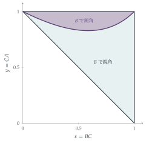

STEP III 1990、第16問
先に進む前に問題を読んでおこう。問題は STEP Support Programme の問題データベースにある： step.maths.org/questions/90-s3-q16
導入
棒をランダムな 2 点で折る。3 本の断片で三角形を作れるだろうか。有名な答えは「確率（probability） \(\frac14\) で作れる」である。では、作れたとき、その三角形は鋭角三角形（acute triangle）だろうか、それとも鈍角三角形（obtuse triangle）だろうか。たいていは鈍角である。できる三角形のうち鋭角三角形はおよそ 3 分の 1 にすぎない。ランダムな図形に関するこの種の問題は 19 世紀以来、確率論の研究者たちを楽しませてきた。また、連続確率（continuous probability）を扱う格好の練習の場でもある。領域内のランダムな点、部分領域を定める条件、そしてその面積を求める積分がそろっているからである。
この問題では棒の折り方を 2 通り考え、それぞれについて鈍角が現れる確率を問う。答えは \(3 - 2\sqrt2\) と \(3 - 4\ln2\) であり、単純な幾何から意外な数が現れる。
取りかかる前に
3 つの長さで三角形が作れるのは、どの長さも他の 2 つの和より小さいとき、かつそのときに限る。長さの和が \(L\) であるとき、これは最も長いものについて何を意味するか。辺 \(c\) の対角が鈍角になるのはどのようなときか。
\(a + b + c = L\) のもとで \(c < a + b\) は \(c < \frac L2\) を意味する。したがって 3 本の断片で三角形が作れるのは、どの断片も全長の半分より短いときにちょうど一致する。余弦定理（cosine rule）により、\(c\) の対角が鈍角になるのは \(c^2 > a^2 + b^2\) のときにちょうど一致する。
順を追って解く
段階 1 1 回切ってから半分にする
断片は \(X\), \(\frac{1 - X}{2}\), \(\frac{1 - X}{2}\) である。等しい 2 本はつねに \(\frac12\) より短いので、三角形ができるのは \(X < \frac12\) のとき、かつそのときに限る。この三角形は二等辺三角形（isosceles triangle）であり、等しい 2 角は鋭角であるから、鈍角三角形になるのは \(X\) の対角が鈍角のときに限る： \[X^2 > 2\Bigl(\frac{1 - X}{2}\Bigr)^2 = \frac{(1 - X)^2}{2}, \qquad\text{すなわち}\qquad \sqrt2X > 1 - X, \quad X > \frac{1}{1 + \sqrt2} = \sqrt2 - 1.\] \(X < \frac12\) という条件のもとで、\(X\) は \([0, \frac12]\) 上の一様分布（uniform distribution）に従うので、 \[\mathrm{P}(\text{鈍角} \mid \text{三角形}) = \frac{\frac12 - (\sqrt2 - 1)}{\frac12} = 3 - 2\sqrt2 \approx 0.172. \qed\]
段階 2 2 つ目の作り方
頂点が \((1, 0)\), \((1, 1)\), \((0, 1)\) の三角形内の \((x, y)\) について、辺 \(x\), \(y\), \(2 - x - y\) に対する 3 つの三角不等式（triangle inequality）を確かめよ。
領域は \(\{x \leq 1, y \leq 1, x + y \geq 1\}\) である。不等式は、\(x + y \geq 2 - x - y\) すなわち \(x + y \geq 1\)、\(x + (2 - x - y) \geq y\) すなわち \(y \leq 1\)、\(y + (2 - x - y) \geq x\) すなわち \(x \leq 1\) である。これらはすべて領域内で成り立つ（領域の辺上では等号が成り立ち、そこでは三角形は退化（degenerate）している）。■
\(B\) における角は辺 \(CA = y\) の対角である。条件 \(y^2 > x^2 + (2 - x - y)^2\) を \(y\) についての不等式に書き直せ。
展開すると \(y^2 > x^2 + 4 + x^2 + y^2 - 4x - 4y + 2xy\) となるので \(4y - 2xy > 2x^2 - 4x + 4\)、すなわち \(2y(2 - x) > 2(x^2 - 2x + 2)\) である。\(2 - x > 0\) であるから、 \[\angle ABC \text{ が鈍角} \iff y > \frac{x^2 - 2x + 2}{2 - x}. \qed\]
段階 3 面積
\(x^2 - 2x + 2\) を \(2 - x\) で割れ。次に、領域のうち曲線より上にある部分の面積を求め、領域の面積 \(\frac12\) で割れ。
\(x^2 - 2x + 2 = -x(2 - x) + 2\) であるから、曲線は \(y = -x + \frac{2}{2 - x}\) である。この曲線は \((0, 1)\) から \((1, 1)\) まで延び、\(0 < x < 1\) では直線 \(y = 1 - x\) より上、\(y = 1\) より下にある（図 12.21.1）。鈍角となる領域は曲線と \(y = 1\) の間にあり、その面積は \[\int_0^1\Bigl(1 + x - \frac{2}{2 - x}\Bigr)\mathrm{d}x = 1 + \frac12 + \bigl[2\ln(2 - x)\bigr]_0^1 = \frac32 - 2\ln2.\] \(\frac12\) で割って、\(\mathrm{P}(\angle ABC \text{ が鈍角}) = 3 - 4\ln2 \approx 0.227\) を得る。■

振り返り
幾何を不等式に翻訳する。「三角形を作る」も「鈍角である」も、長さの間の不等式になった。
連続変数に対する条件付き確率（conditional probability）。\(X < \frac12\) という条件のもとで、\(X\) はより短い区間上の一様分布に従った。
面積の比としての確率。領域内に一様に分布する点については、確率は面積を全体の面積で割ったものである。
背後にある数学
古典的な折れた棒の問題
棒を、独立（independent）に一様分布する 2 点 \(U\), \(V\) で折る。組 \((U, V)\) は単位正方形上に一様に分布し、3 本の断片で三角形が作れるのは各断片が \(\frac12\) より短いときにちょうど一致する。この条件は合計面積 \(\frac34\) の 4 つの小さな三角形を切り取るので、確率は \(\frac14\) となる。三角形ができたという条件のもとで、それが鋭角三角形である確率は \(\frac14\) のうちの \(3\ln2 - 2 \approx 0.079\)、すなわち約 \(32\%\) である。これらの断片は一様ランダム分割（uniform random partition）の一例であり、その同時分布はディリクレ分布（Dirichlet distribution）である。ディリクレ分布はベイズ統計学（Bayesian statistics）や、資源がランダムに分配される様子のモデルに現れる。
棒の折り方が結果を左右する
問題の 2 つの方法は、よく似て聞こえる問いに対して \(3 - 2\sqrt2\) と \(3 - 4\ln2\) という異なる答えを与え、しかもどちらも古典的な方法とは異なることに注意しよう。ベルトラン（Bertrand）の弦の問題（第 12.3 節）と同様に、手順を指定しない限り「ランダム」という言葉には何の意味もない。
ランダムな三角形に関する問題は、ヴィクトリア朝時代に人気のあったパズルである。ルイス・キャロル（Lewis Carroll）の Pillow Problems（1893 年）は、「ランダムに」選んだ三角形が鈍角三角形である確率を問うている。その答えは、本節の答えと同じく、彼が選んだランダムさのモデルに完全に依存する。ランダムな三角形に関する問題はその後も驚きを生み続けてきた。たとえば、正方形内に一様ランダムにとった 3 点が鈍角三角形をなす確率は約 \(0.725\) であり、これが厳密に計算されたのは 20 世紀になってからである。
思考のスキル
ランダムな結果を領域内の点として、事象を部分領域として表し、確率を面積の比（あるいは密度（density）の積分）として計算する。
大学では、この見方が多変量確率論（multivariate probability）の基礎となり、また座標を取り替えたときに密度がどう変換されるかを教えてくれる変数変換公式（change-of-variables formula）の基礎にもなる。
次の一歩
古典的な問題。棒を独立に一様分布する 2 点で折るとき、断片で三角形が作れる確率は \(\frac14\) であることを示せ。
長いほうの断片を折る。棒を一様分布する 1 点で折り、次に長いほうの断片を一様分布する 1 点で折る。3 本の断片で三角形が作れる確率は \(2\ln2 - 1 \approx 0.386\) であることを示せ。
鋭角か鈍角か。小問 (ii) において、三角形 \(ABC\) が \(C\) において（\(AB = 2 - x - y\) の対角として）鈍角をもつ確率を求めよ。これを用いて、どこかに鈍角をもつ確率を求めよ。
最長の断片の期待値。古典的な折れた棒の問題において、最も長い断片の長さの期待値（expected value）は \(\frac{11}{18}\) であることを示せ。
さらに学ぶために
Martin Gardner, The Colossal Book of Mathematics（Norton）。折れた棒の問題を収録している。
Frederick Mosteller, Fifty Challenging Problems in Probability（Dover）。
Lewis Carroll, Pillow Problems（Dover、A Tangled Tale と合本）。ランダムな三角形を含むヴィクトリア朝時代のパズル集。